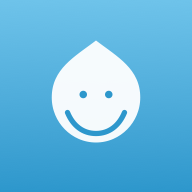

JOKUSO+JOKUSO+（以下「本アプリ」）は、DESIGN-R®︎に沿った褥瘡の経過記録・可視化を目的とした、訪問看護師・介護施設の看護師向けアプリです。本ポリシーは、本アプリにおける情報の取り扱いについて説明するものです。
患者名・DESIGN-R®︎の評価内容・経過写真・メモなど、本アプリで入力・撮影する記録データはすべてお使いの端末内（ブラウザまたはアプリのローカルストレージ）にのみ保存されます。これらのデータが本アプリの運営者や第三者のサーバーに送信されることは一切ありません。
写真は端末内で自動的に圧縮されたうえで端末内に保存され、外部にアップロードされることはありません。
本アプリの改善のため、GoatCounter（プライバシー重視の匿名アクセス解析サービス）を用いて、アプリが開かれた回数・日時などの匿名の利用状況のみを計測しています。この計測にはCookieを使用せず、氏名・患者情報・記録内容など個人を特定できる情報は一切含まれません。
詳細は GoatCounterのプライバシーポリシー をご参照ください。
記録データを外部に送信・保存することはないため、記録データの第三者への提供・共有も行いません。上記の匿名利用状況データを除き、広告配信やトラッキングも使用していません。
記録データは、アプリ内の削除機能から患者・記録単位で削除できるほか、端末・アプリのデータを削除することで、すべてのデータを消去できます。
記録データは端末内にのみ保存されるため、アプリの削除や端末の初期化、ブラウザのデータ消去を行うと、記録内容も失われます。重要な記録は、必要に応じて別途バックアップを取るなどご注意ください。
本アプリは医療機器ではなく、診断や治療を目的としたものではありません。DESIGN-R®︎による評価はあくまで記録・可視化の補助を目的としたものであり、実際の評価・治療方針の判断は、必ず医療専門職の責任のもとで行ってください。
本ポリシーの内容は、法令の変更やアプリの機能追加に伴い、予告なく変更される場合があります。変更後の内容は本ページに掲載した時点で効力を生じるものとします。
本ポリシーに関するお問い合わせは、以下までご連絡ください。